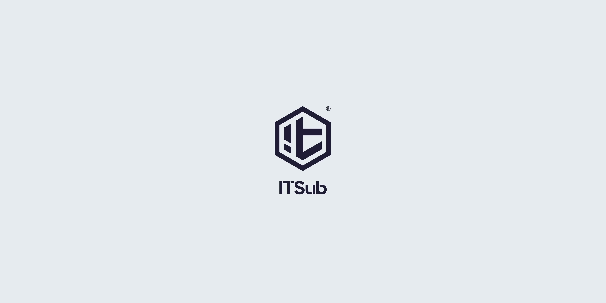
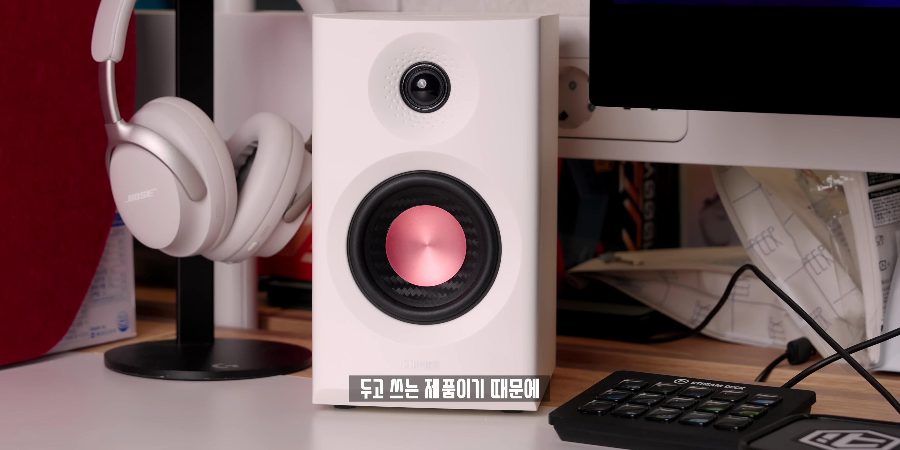

에디파이어 MR3 vs MR4: 가성비 사운드바 비교
이번 포스트에서는 최근 유튜브에서 화제가 된 에디파이어 MR3와 MR4 모델에 대한 비교와 그 특징을 살펴보겠습니다. 고가의 스피커를 사고 싶지만 내 예산이 부족한 일반 사용자라면 이 글이 유용할 것입니다.
가성비 스피커 비교
- 저렴한 가격에 좋은 성능의 스피커를 찾는 사용자 위해 비교 시작
- 패블 스피커와 에디파이어 MR4가 두 가지 후보로 선정
가격 대비 성능이 좋은 스피커를 찾는 사용자들을 위해 지난 가성비 사운드바 스피커 비교 영상의 긍정적인 반응을 소개합니다. 높은 성능을 가진 스피커를 쓰는 분들은 물론, 가격이 부담스러운 일반 사용자들을 위한 추천 제품입니다.

에디파이어 MR4의 장점
- 소리는 10만 원 이하 수준의 고음질
- 가격 대비 성능이 뛰어난 리뷰에서 호평
에디파이어 MR4는 가격 대비 소리 품질이 뛰어나며 많은 사용자의 호평을 받고 있습니다. 예상보다 높은 성능에 감탄할 만한 제품입니다.
에디파이어 MR3의 기대감
- MR4보다 크기가 작고 가성비를 기대
- 최근 출시된 MR3에 대한 기대감 고조
이전 모델인 MR4에 비해 크기가 작아 진 MR3에 대한 기대가 커지고 있습니다. 더 나은 가성비가 보장될 것으로 기대되는 점을 강조합니다.

청음 후 느낀 차이
- MR4의 소리 품질은 좋지만 MR3가 취향에 맞음
- MR3는 베이스가 강하고 음악의 응집력 뛰어남
MR3는 음향적으로 더 모아주는 느낌과 강한 베이스를 제공합니다. 반면 MR4는 음이 퍼지는 느낌이 강하고, 보컬이 상대적으로 강조되는 특성을 보입니다.

실사용 후 소리 품질
- 맥북과 연결 시 소리 차이 경험
- MR3의 블루투스 기능 추가
장시간 사용 후, 두 모델 간 부각되는 음질 차이를 느꼈습니다. MR3는 블루투스 기능이 추가되어 음악 감상이 더욱 편리해졌습니다.

최종 추천 및 가격
- MR4는 할인 시 가성비가 뛰어날 것
- MR3는 가격에 비해 음질이 뛰어나 추천
MR4는 정가보다 할인 된 가격에 구매할 가치가 있으며, MR3는 예산을 고려했을 때 훌륭한 선택이 될 것입니다. 두 모델 모두 장단점이 명확하므로 선택은 개인의 취향에 따라 달라질 수 있습니다.
Tags: #에디파이어 #스피커 리뷰 #MR3 #MR4 #가성비 스피커 #음질 비교 #블루투스 스피커 {< youtube T4HTuBi1k9Y >}